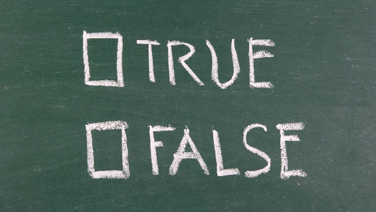

よく「正直者がバカを見る」という言葉を聞きます。
「正直者がバカを見るような社会ではいけない」「正直に生きている人が報われないなんて理不尽だ」など。
どうも正直な人は損をしている。そういう思いが一般にあるようです。その裏には、社会でうまく立ち回るためには巧妙に人を欺いたり、損得計算に長けた者が正直者の裏をかいて、チャッカリと私利私欲を満たしているという疑念があると感じます。
このような思いは日本人だけでなくどんな国や地域にも共通しているようです。
確かに実際、国によっては一部の権力者や有力者とそこにつながる一族などがコネなどを使って私服を肥やしたり独占的に利益を享受するところがあります。
また民主的な国であっても、政治家や官民の癒着などによる利権の構造が時折見られることも事実です。
だからメディアなどはそのような利権を告発するとき「正直に生きている庶民は日々の暮らしにも大変な思いをしているのに…」という論調になるわけです。
そこで多くの人は「我々庶民は正直に生きているゆえにワリを食っている」が「権力者や金持ちはカゲで悪いことをやっているから成功している」となんとなく思ってしまうわけです。
果たして本当に正直者はバカをを見るのでしょうか。
本当に人を欺いたりズルく立ち回らなければうまくやっていけないのでしょうか。
結論からいえばそんなことはありません。
確かに不公平や不平等は存在しています。
しかしズルくなければ、計算高くなければ、抜け道を見つけなければ社会で成功できない。上手くやっていけないなどということはありません。
もしそう信じているならそれは妄想です。妄想といって悪ければ被害者感情に基づく問題のすり替えです。
なぜなら「正直者はバカを見る」と思っている人の大半は、自分が正直に生きているつもりかもしれませんが私の見るところ、本当の意味で正直に生きている人はほとんどいないからです。
むしろ正直に生きていないからバカを見るのです。
多くの人は正直ではない。
誰に対してか。自分に対してです。
自分に正直でなければ人生はうまくいかない
“自分に正直に生きる”
これはとても大切なことだと私は思っています。
多くの人は自分を偽って生きているのが現状だからです。
研修などで私は受講者の皆さんに「自分の思っていることをいつでも誰にでも正直に話せますか」と問うことがありますが、ほとんどの人は首を横に振ります。
私たちは会社、学校、近所の人たちとの集まり、PTAの会合などでいつも周りの様子をうかがい全体の空気を読んで発言しています。全体の方向と外れる意見や、まして上司や先輩の考えに異を唱えることなどまずしないのではないでしょうか。
いや親しい友人たちとの間でさえも皆と違う考えをもっていても正直に話すことは滅多にないかもしれません。
そして不満を溜め込みます。その結果、後で「あんなこと言われてもねぇ」などと文句を言ったりします。
「なぜそのとき自分の気持ちを正直に話さなかったの？」と聞くと「だって、言えるわけないよ。あの雰囲気じゃ……」などと答えます。
私はこういう態度を非常に不正直であると思っています。
「本当はこう言いたい（したい）」という考えをもっているのに、その場では周りに同調して何も言わず後で文句を言う。批判する。陰口を叩く人のなんと多いことか。
そしてこういう不正直（不誠実）をまったく自覚せず、逆に自分が被害者であるかのように感じている人のなんと多いことか。
ここで重大なことを指摘しなくてはなりません。
人生がうまくいかないのはこのように自分を偽っているからというのが真相だということです。
決して計算高く振る舞わないからではありません。逆です。
自分だけ孤立したり、仲間外れになったり攻撃されたりすることを恐れ、つまり自分の利害得失を計算しているからこそ正直に振る舞えない。
自分だけ「不正解」のハズレを引きたくない。
だから自分を偽ってでも周囲に合わせようとする。他人の顔色をうかがい自分の本心を隠そうとする。
このような不正直な在り方では他者の信用（信頼）など到底得ることはできない。
結果としてその人の人生はうまくいかなくなるということです。
自分をさらけ出す勇気
自分の気持ちに正直でいること。自分の考えを正直に語ること。自分の過ちを正直に認めること。
これらは確かに難しいものです。正直なあまり、ひんしゅくを買ったり孤立することもあるでしょう。「俺に楯突く気か」と怨まれることもあります。
正直に過ちを認めることで恥をかくこともあるでしょう。
しかし、正直な人は結局は人から信頼されます。これは間違いなく言えます。
私の言う“正直”は、自説に固執して思ったことを口にする子どもじみた振る舞いでもなく、むしろ自分をオープンに飾り立てず明け渡す行為のことです。
恐れずありのままの自分をさらけ出すことです。
犬が安心して飼い主に腹をさらけ出すように、思い切って無防備に「自分とはこういう人間である」と包み隠さず広げてしまうのです。欠点さえも隠そうとしないオープンハートの人を誰も攻撃しないものです。
なぜならどんな人でも本当はオープンでいたいからです。たとえ未熟であっても欠点が多くても正直にそれを広げて見せている人は、相手の警戒を解き安心感を与えます。リラックスできるのです。そして助けてあげたくなります。
なのでこういう人は信頼されやすく、仕事でも人間関係でもうまく回りだすのです。
私がこのように力説してもなかなか信じてもらえないことは分かっています。
「そりゃオープンで正直でいたいけど世の中そんなに甘いものではない」
大抵の人はそんなことを言うのです。
それは自分を正直にさらけ出すことで何か人に弱みを握られるような恐れを抱いているからでしょう。
中にはこんなことを言う人もいます。
「それはあなたが自信のある人だからでしょ」「あなたは強いからそうできるけど、ふつうの人はなかなか……」
そういう人に私が言いたいのは「あなたは一度でも正直に心の内をさらしたことがあるのですか」ということです。
私はこれまでスタッフをはじめとして多くの人と仕事などで関わってきました。
いまでも多くの異業種の人たちと一緒に仕事をしていますが、そこで感じるのは「うまくいかない人」には共通点があるということです。
それは正直さに欠けるということ。
人の顔色ばかり見て「有利な方」に向かおうとする。自分だけ分かっていないと思われたくなくて取り繕う。相手（上司など）の意向にそった答えばかりを探ろうとする。
結果として「自分の本心」を隠し、かえって窮地に追い込まれていく。
私は才能がありながらこのように信頼を失ってマイナスのスパイラルに落ち込んでいく人を大勢みてきました。
とても残念で仕方ありません。
ほんの少しの、僅かばかりの正直さがあれば救われたのにという思いです。正直である勇気ということです。
たとえば私は分からないとき「分からない」と正直に答えることにしています。「すみませんよく分からないので教えて下さい」と言います。
すると大抵は驚くほど喜んで教えてくれるものです。
私はこれによってどれだけ助けられたか分かりません。
世の中には色々な分野で「専門家」「詳しい人」がいます。そういう人たちは自分の知識を役立て、人と共有することに喜びを感じる傾向が強い。
いわゆる「成功者」の中にも他人の成功を助けることに喜びを感じる人は想像以上に多いものです。
こういう人たちは「教えを請う人」に決して出し惜しみはしません。だから正直に自らの無知をさらけ出してオープンに接すれば喜んで助けてくれます。身近な先輩や上司の中にもそういう人は多いはずです。
一方こういう「善意の人たち」は自分を取り繕う者に対しては二度と相手にしようとしません。彼らが冷淡だからではなく、おせっかいに介入したくないからでありまた「不正直者」に付き合うほどヒマがないからです。
これは大変損なことではないでしょうか。
正直こそが最強の生き方
私はここまで“正直”をキーワードに長々と書いてきましたが、要するに自分のありのままを恐れずオープンにすることの大切さを説いているわけです。
なぜならその方が断然「得」だからです。
「正直者はバカを見る」どころか「正直者は得をする」が真実だということ。それは常に自分をさらけ出すことで他者を含め世界を包み込むあり方だからです。
振り返ってみれば私たちは誰でも子どもの頃は世界にハートを開いて接していました。
他人に対し、自然に対し、動物に対し心を開きいつもオープンでいたはずです。だからこそ世界はあんなにも輝いていたのです。愛されていたのです。
しかし大人になるにつれ、私たちは自分を守るため周囲に壁を築きそこに閉じこもることで世界を締め出してきました。
「油断してはいけない」「他人に弱みを見せてはいけない」「うっかり本音を言うと危険」「世間は弱肉強食だ。お人好しでは生き残れない」「正直にやるだけでは結局損をする」
このような姿勢はまさに世界（他者）と敵対する行為であるといえます。
人間関係やものごとが上手くいかなくなるのも当然です。
正直であること。オープンであることは自・他の境界を崩し、世界と和解することを意味します。
不信と拒絶の壁を取り払えば、境界（ボーダー）は消え信頼という名の愛が流れ込むでしょう。
もしあなたが親であるなら子どもにつたえるべきはこのことです。正直は「美徳である」からではなく、人生を滞りなく渡っていくための、むしろきわめて実用的なあり方であるということです。
正直にオープンであることは世界（他者）を信頼することであり、世界を信頼すれば世界からも信頼される。他人に正直であれば他人も正直を返してくる。不信を発すれば不信が返ってくる。
この超絶シンプルなあり方を素直に実践してみて下さい。「正直はバカを見る」などとひねくれた見方をするのではなく、愚直に実践し貫き通せばその素晴らしい効力に目を見張るでしょう。